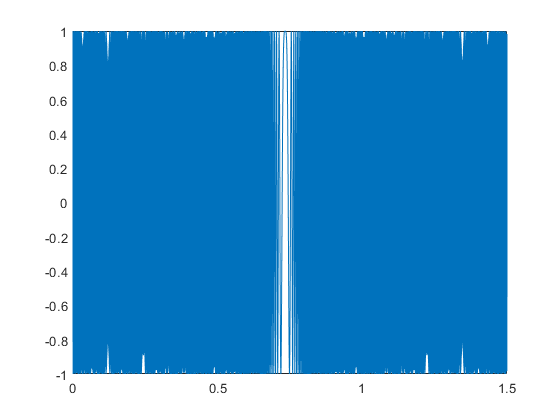
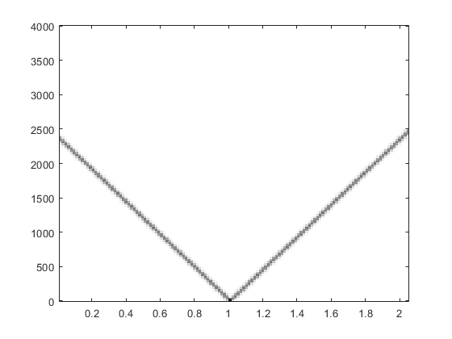
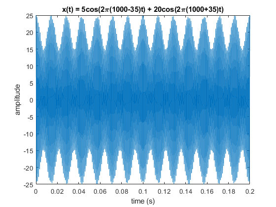
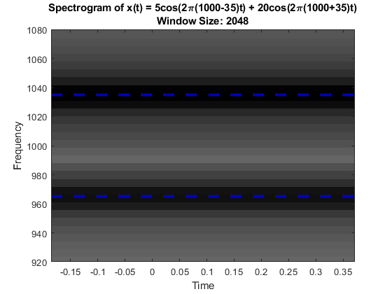
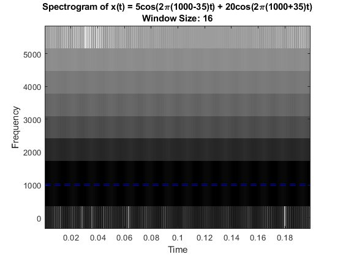
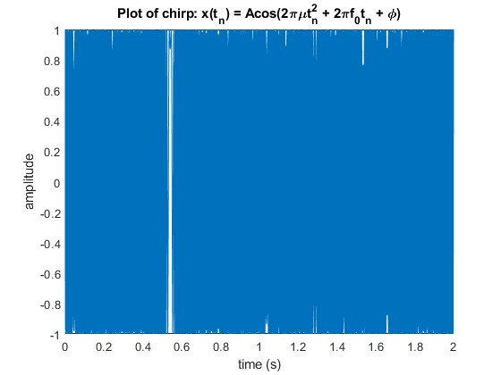
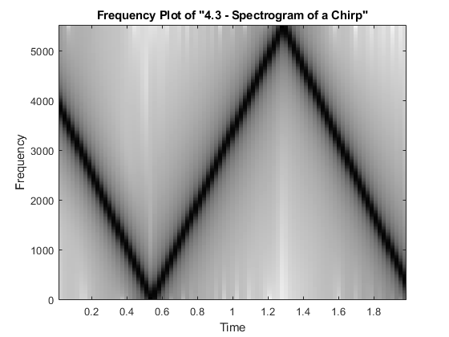
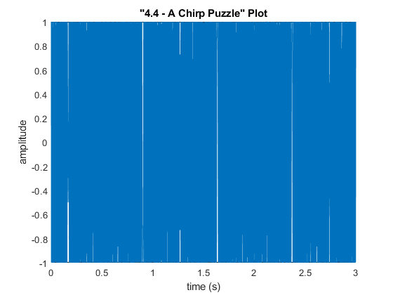
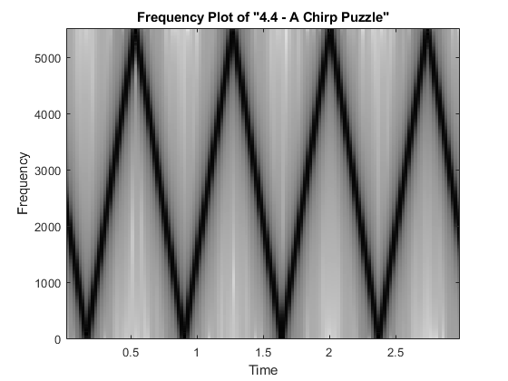

Contents
%{ Yonatan Carver ECES 352 - Lab 4 %} clear; clc; close all
2.4 MATLAB Synthesis of Chirp Signals
fsamp = 11025; dt = 1/fsamp; dur = 1.8; tt = 0 : dt : dur; psi = 2 * pi * ( 100 + 200 * tt + 500 * tt .* tt ); xx = real( 7.7 * exp(1j * psi) ); soundsc( xx, fsamp );
3.2 Function for a Chirp
% function [xx, tt] = chirpsyn( f1, f2, dur, fsamp ) f1 = 3300; % 3300 Hz f2 = 300; % 300 Hz dur = 1.5; % 1.5 seconds [xx, tt] = chirpsyn( f1, f2, dur ); figure plot(tt,xx) figure plotspec(xx); % specgram(xx) % soundsc(xx)
PLOTSPEC: Sampling Frequency defaulting to 8000 Hz 
4.1/4.2 Beat Notes & More on Spectrograms
(a)
delf = 35; % 35 Hz dur = 0.2; % 0.2 sec fsamp = 11025; % 11025 Hz fc = 1000; % 1650 Hz A = 5; B = 20; % function [xx, tt] = beat( A, B, fc, delf, fsamp, dur ) [xx, tt] = beat(A, B, fc, delf, fsamp, dur); figure plot(tt, xx) title(['x(t) = ', num2str(A), 'cos(2\pi(', num2str(fc), '-', num2str(delf), ... ')t) + ', num2str(B), 'cos(2\pi(', num2str(fc), '+', num2str(delf), ')t)']) xlabel('time (s)') ylabel('amplitude') % (b) figure specgram(xx, 2048, fsamp); colormap(1-gray(256)) title({['Spectrogram of x(t) = ', num2str(A), 'cos(2\pi(', num2str(fc), '-', num2str(delf), ... ')t) + ', num2str(B), 'cos(2\pi(', num2str(fc), '+', num2str(delf), ')t)'], 'Window Size: 2048'}) ylim([920 1080]) % zoom into the relevant region with frequency peaks yline(1035, 'b--', 'LineWidth', 3); yline(965, 'b--', 'LineWidth', 3); % There are two significant spikes in the spectrogram plot due to the % original signal being the sum of two cosines at frequencies 965 and 1035 % Hz respectively % The frequency plot has been zoomed in so that the user can verify that % the frequency peaks (denoted by the black horizontal lines) are at the % correct frequencies (965Hz and 1035Hz). Additionally, there are blue % dashed lines inserted at the corresponding frequencies. % Other frequency spectrum plotting functions: % spectrogram(xx, 1024, 'yaxis') % plotspec(xx); % To generate a sound: % soundsc(xx) % (b) figure specgram(xx, 16, fsamp); colormap(1-gray(256)); yline(1035, 'b--'); yline(965, 'b--'); title({['Spectrogram of x(t) = ', num2str(A), 'cos(2\pi(', num2str(fc), '-', num2str(delf), ... ')t) + ', num2str(B), 'cos(2\pi(', num2str(fc), '+', num2str(delf), ')t)'], 'Window Size: 16'}) % This spectrogram appears to lose the resolution given in the plot above. % There are still two blue lines inserted at the frequency peaks however % they appear to blend together.  
4.3 Spectrogram of a Chirp
% function [xx, tt] = chirpsyn( f1, f2, dur, fsamp ) f1 = 4000; f2 = 300; dur = 2; fsamp = 11025; [xx, tt] = chirpsyn( f1, f2, dur, fsamp ); figure plot(tt,xx) title('Plot of chirp: x(t_n) = Acos(2\pi\mut_n^2 + 2\pif_0t_n + \phi)') xlabel('time (s)') ylabel('amplitude') % It is unknown why the beginning of the time plot is condensed and why the % signal does not originate at 0. This has been discussed with Taha and we % are still unable to figure out the reasoning behind this. figure specgram(xx, 512, fsamp); colormap(1-gray(256)) title('Frequency Plot of "4.3 - Spectrogram of a Chirp"') % plotspec(xx); % Upon listening to the signal, the chirp appears to go up then down then % back up. This is likely due to aliasing. Additionally, the signal appears % to increase and decrease linearly. % soundsc(xx) 
4.4 A Chirp Puzzle
% function [xx, tt] = chirpsyn( f1, f2, dur, fsamp ) f1 = -2500; f2 = 2500; dur = 3; fsamp = 11025; [xx, tt] = chirpsyn( f1, f2, dur, fsamp ); figure plot(tt,xx) title('"4.4 - A Chirp Puzzle" Plot') xlabel('time (s)') ylabel('amplitude') figure specgram(xx, 512, fsamp); colormap(1-gray(256)) title('Frequency Plot of "4.4 - A Chirp Puzzle"') % plotspec(xx); % The signal appears to go both up and down. % soundsc(xx) 